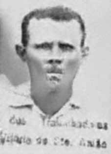

Albertino
José
de Farias
CIRCUNSTÂNCIAS DA MORTE
Albertino José de Farias foi encontrado morto, por um vizinho, na mata perto do Engenho São José, no município de Vitória de Santo Antão (PE). A versão apresentada pelos agentes públicos registra que Albertino José se suicidou por envenenamento e seu corpo foi achado, já em decomposição, nas imediações da cidade de Vitória de Santo Antão. Albertino José de Farias estava à frente de cinco mil lavradores armados de espingardas, enxadas, foices e facões quando ocuparam a cidade de Vitória de Santo Antão com o objetivo de criar uma resistência ao golpe militar. Durante dois dias, todos os órgãos públicos da cidade ficaram sob o comando dos líderes regionais das Ligas Camponesas, que esperaram inutilmente por armas, munições e mantimentos que seriam fornecidos pelo governador Miguel Arraes, deposto nesse dia.
No terceiro dia de ocupação, as tropas das Forças Armadas, Polícia Militar e policiais do Departamento Federal de Segurança Pública (DFSP) e Departamento de Ordem Política e Social (DOPS) de Pernambuco retomaram o controle e iniciaram uma caçada aos líderes do movimento. Casas, pequenas propriedades e matas da região foram vasculhadas para encontrar as armas dos camponeses. Segundo sua família, Albertino José desapareceu em uma terça-feira, possivelmente, e somente foi encontrado em um domingo.
Nunca foram apuradas as circunstâncias reais de sua morte. Segundo relatos, Sebastião Pereira da Silva encontrou o corpo de Albertino na mata, avisou a polícia e chamou a família do líder camponês para fazer o reconhecimento. A esposa de Albertino não conseguiu subir até onde o corpo estava na mata, mas a vítima foi reconhecida por dois filhos do casal pelas roupas que vestia.
No entanto, mesmo avisada, a polícia recolheu o corpo apenas cinco dias após a comunicação de Sebastião, quando o corpo já estava num processo avançado de decomposição e muito machucado pelos urubus. A polícia colocou os restos mortais em uma mala e levou para o cemitério da cidade. A despeito disto, não deixou a família ter acesso ao corpo e, consequentemente, realizar as homenagens finais. Deve ser sublinhado que a versão de suicídio por envenenamento foi categoricamente rechaçada pela família de Albertino José de Farias.
Em matéria de dois jornais, à época, foi divulgado o fato de terem encontrado o corpo de Albertino José na mata do Engenho São José, registrou-se que a ocorrência e o inquérito estavam sob a responsabilidade do major Rômulo Pereira. No entanto, os registros desse inquérito não foram encontrados nos órgãos competentes do município de Vitória de Santo Antão. Até a presente data, os restos mortais de Albertino José não foram localizados e, consequentemente, sepultados, bem como não ocorreram esclarecimentos sobre as circunstâncias que envolveram sua morte.
Albertino José de Farias was found dead, by a neighbor, in the woods near Engenho São José, in the municipality of Vitória de Santo Antão (PE). The version presented by public agents records that Albertino José committed suicide by poisoning and his body was found, already decomposed, near the city of Vitória de Santo Antão. Albertino José de Farias was at the head of five thousand farmers armed with shotguns, hoes, sickles and machetes when they occupied the city of Vitória de Santo Antão with the aim of creating resistance to the military coup. For two days, all public bodies in the city were under the command of the regional leaders of the Peasant Leagues, who waited in vain for weapons, ammunition and supplies that would be provided by governor Miguel Arraes, deposed that day.
On the third day of occupation, troops from the Armed Forces, Military Police and police officers from the Federal Department of Public Security (DFSP) and Department of Political and Social Order (DOPS) of Pernambuco regained control and began a hunt for the movement's leaders. Houses, small properties and forests in the region were searched to find the peasants' weapons. According to his family, Albertino José possibly disappeared on a Tuesday and was only found on a Sunday.
The real circumstances of his death were never established. According to reports, Sebastião Pereira da Silva found Albertino's body in the woods, notified the police and called the peasant leader's family to recognize him. Albertino's wife was unable to climb to where the body was in the woods, but the victim was recognized by two of the couple's children due to the clothes he was wearing.
However, despite being warned, the police collected the body just five days after Sebastião's communication, when the body was already in an advanced process of decomposition and badly injured by vultures. The police placed the remains in a suitcase and took them to the city cemetery. Despite this, he did not allow the family access to the body and, consequently, pay final tributes. It must be emphasized that the version of suicide by poisoning was categorically rejected by the family of Albertino José de Farias.
In an article published in two newspapers at the time, the fact that Albertino José's body had been found in the Engenho São José forest was reported, and it was noted that the incident and the investigation were under the responsibility of Major Rômulo Pereira. However, the records of this investigation were not found in the competent bodies of the municipality of Vitória de Santo Antão. To date, Albertino José's remains have not been located and, consequently, buried, nor have there been any clarifications regarding the circumstances surrounding his death.
Albertino José de Farias fue encontrado muerto, por un vecino, en el bosque cercano a Engenho São José, en el municipio de Vitória de Santo Antão (PE). La versión presentada por agentes públicos registra que Albertino José se suicidó por envenenamiento y su cuerpo fue encontrado, ya descompuesto, cerca de la ciudad de Vitória de Santo Antão. Albertino José de Farias estaba al frente de cinco mil campesinos armados con escopetas, azadones, hoces y machetes cuando ocuparon la ciudad de Vitória de Santo Antão con el objetivo de generar resistencia al golpe militar. Durante dos días, todos los organismos públicos de la ciudad quedaron bajo el mando de los líderes regionales de las Ligas Campesinas, quienes esperaron en vano armas, municiones y pertrechos que serían proporcionados por el gobernador Miguel Arraes, depuesto ese día.
Al tercer día de ocupación, tropas de las Fuerzas Armadas, Policía Militar y policías del Departamento Federal de Seguridad Pública (DFSP) y del Departamento de Orden Político y Social (DOPS) de Pernambuco retomaron el control y comenzaron una búsqueda de los líderes del movimiento. Se registraron casas, pequeñas propiedades y bosques de la región para encontrar las armas de los campesinos. Según su familia, Albertino José posiblemente desapareció un martes y recién fue encontrado un domingo.
Las verdaderas circunstancias de su muerte nunca fueron establecidas. Según los informes, Sebastião Pereira da Silva encontró el cuerpo de Albertino en el bosque, avisó a la policía y llamó a la familia del líder campesino para reconocerlo. La esposa de Albertino no pudo subir hasta donde estaba el cuerpo en el bosque, pero la víctima fue reconocida por dos hijos de la pareja por la ropa que vestía.
Sin embargo, a pesar de haber sido advertida, la policía recogió el cuerpo apenas cinco días después de la comunicación de Sebastião, cuando el cuerpo ya se encontraba en avanzado proceso de descomposición y gravemente herido por los buitres. La policía colocó los restos en una maleta y los llevó al cementerio de la ciudad. Pese a ello, no permitió a la familia acceder al cuerpo y, en consecuencia, rendirle los homenajes finales. Cabe destacar que la versión del suicidio por envenenamiento fue rechazada categóricamente por la familia de Albertino José de Farias.
En un artículo publicado en dos periódicos de la época, se informó que el cuerpo de Albertino José había sido encontrado en el bosque de Engenho São José, y se señaló que el incidente y la investigación estaban a cargo del mayor Rômulo Pereira. Sin embargo, los registros de esta investigación no fueron encontrados en los órganos competentes del municipio de Vitória de Santo Antão. Hasta la fecha los restos de Albertino José no han sido localizados y, en consecuencia, enterrados, ni ha habido esclarecimiento sobre las circunstancias que rodearon su muerte.